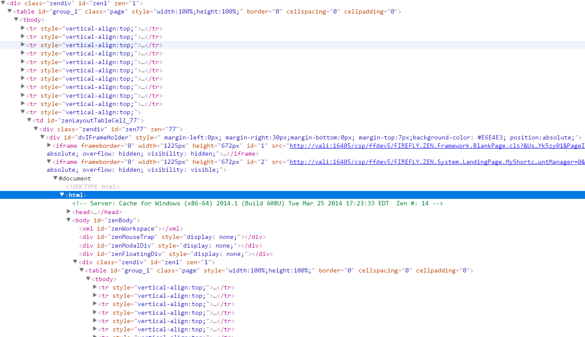

CSS AND HTML
Best practices
A brief explanation on what to do and what not to,
when writing HTML and CSS.
Created by Alessandro Vioni for Objectway.com
BEM slides by Giacomo Zinetti
HTML and CSS are EASY
- Accessible languages
- Permissive rules
It's easy to screw up a project
Modern web development is complicated, projects are huge, complexity is increasing day by day.
Just think at the number of languages, libraries and technologies for the front-end development: Nodejs, Angular, React, Jade ...
Maintenance is the key
- Removal of tables of tables of tables
- Avoid cryptic class names
- Write maintainable code
- Use preprocessors
- Use Jade when possible
- Mixins Placeholders Variables
Maintenance is the key
- Limit the use of JavaScript to the strict necessary
- Use CSS whenever is possible
- Do not use js to replace CSS functionalities
Maintenance is the key
- Adopt methodologies like BEM and ITCSS
- To produce maintainable code
- Important to follow a methodology
- Use linters
- To check code
- To standardize the code written by team members
EXAMPLES
Maintainability examples based on Illumas project
no pun intended :)- Inline CSS is NOT maintainable
- Overcomplicated structure
- CSS classes with inline CSS
- Inline CSS!
TABLES!
 what's wrong with them ?Why are tables wrong?
- They're slow
- Hard to maintain
- They should be used for content not for layout !
- Every time you are nesting a table a kitten dies ...
What we should use?
- Easily maintainable code
- Atomization of the elements
- Break into small pieces of repeatable code
- Buttons, tables, form fields ...
- Atomization of the elements
SASS helps
Use of placeholders and variables can help to keep the front-end structure clean
// -----------
// DATE PICKER
// -----------
%DatePicker {
background: $white;
border-radius: 0.187em;
width: em-calc(280);
}
EXTEND!
.HeaderDateSelector {
@extend %DatePicker;
// overrides
...
}
Wrong!

Two identical elements made with different piece of code !
Correct!

From the Illumas refactoring project
- Create a KitchenSinc
- Create basic reusable elements
- Use them on your project :)
Input field example

WHICH MEANS
An input field usable everywhere, same structure for every similar elements on the page
Keyword: simplification
KitchenSinc is the key
Write reusable elements made with reausable code
Avoid at all cost duplication
Simplify, do not overcomplicate your code
KEEP IT SIMPLE
TASK RUNNERS
The bread and butter of modern web development
What are they?
- They compile, lint, merge, clean, minify code
- They integrate with modern FED workflows because...
- ...they are CLI's (command line interface)
CLI

Most of the Front-end development nowadays is made with the use of CLI's, and most of our work involves, at some degree, the use of at least one compilator (SASS).
EMBRACE THE POWER OF THE CLI
GULP GRUNT BROCCOLI AND THE LIKES...
There are more than a few of task runners, some used more than other, the choice we made is based on speed, scripting language and reliability.


Gulp is written in Nodejs, it's probably the fastest of the group, it is extremely solid and widely used.
Hot to use Gulp
A simple task to compile SASS
npm install gulp-sass --save-dev
var gulp = require('gulp');
var sass = require('gulp-sass');
gulp.task('sass', function () {
return gulp.src('./sass/**/*.scss')
.pipe(sass().on('error', sass.logError))
.pipe(gulp.dest('./css'));
});
gulp.task('sass:watch', function () {
gulp.watch('./sass/**/*.scss', ['sass']);
});
BEM
BLOCK ELEMENT MODIFIER
At this link there is a short description on how we are using BEM at Objectway.